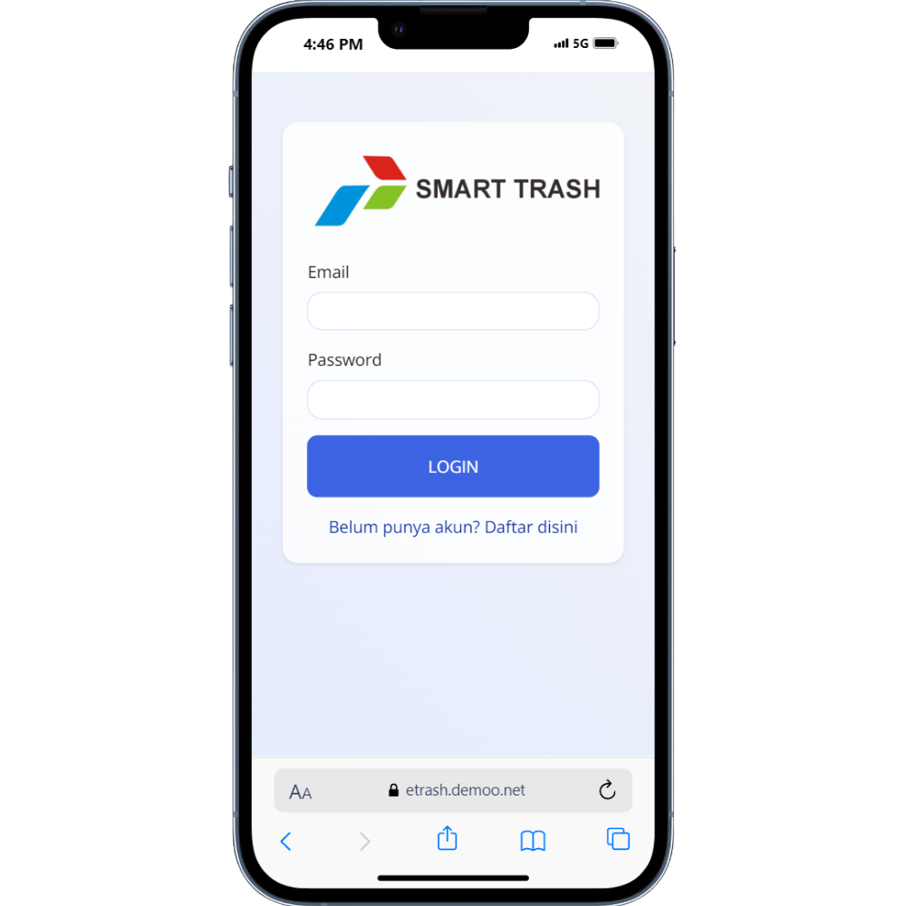
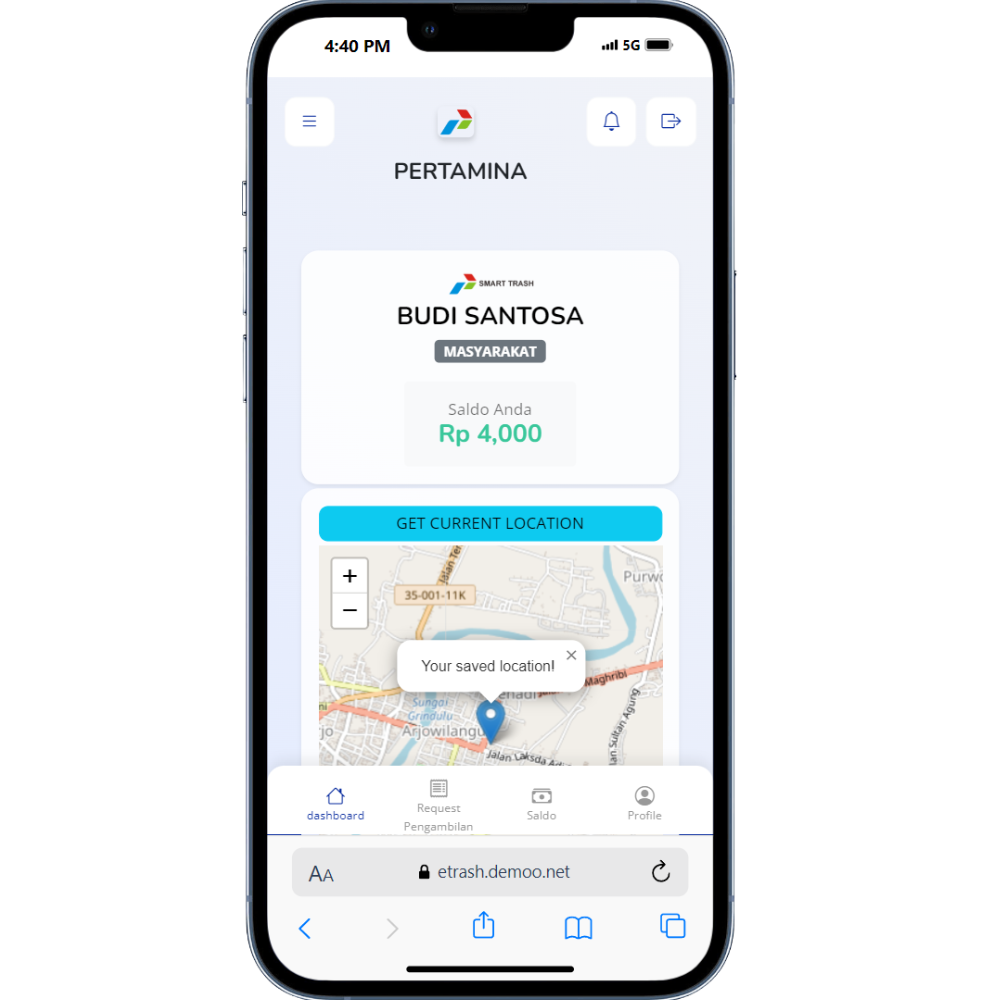
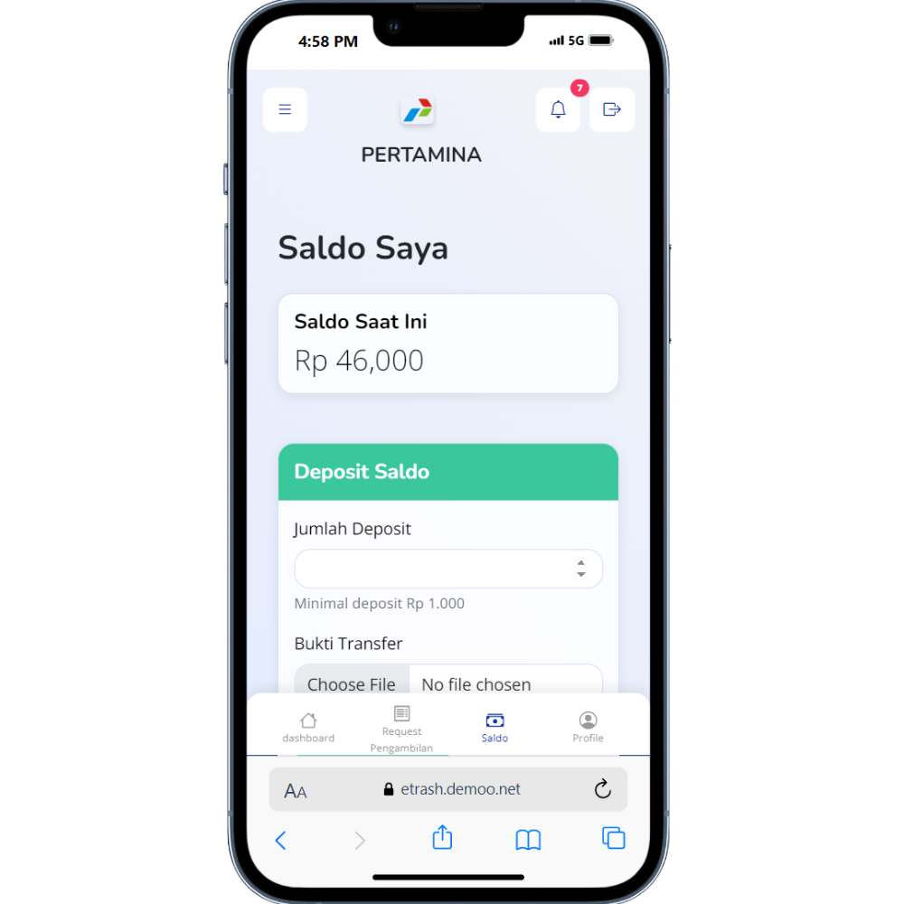
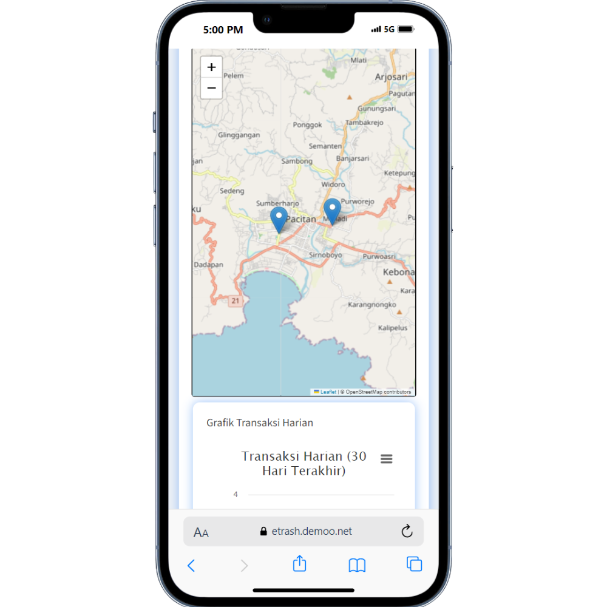

Bangun Kebersihan Bersama Lewat Aplikasi Digital Pengelolaan Sampah
Smart Trash adalah aplikasi pengelolaan sampah digital yang menghubungkan masyarakat, pengepul, dan admin. Aplikasi ini mempermudah proses permintaan, penjemputan, dan verifikasi sampah secara transparan dan efisien.




Dipercaya Oleh
Fitur Utama
Jelajahi Beragam Fitur Unggulan yang Mempermudah Pengelolaan Sampah Anda
-
1. Penjemputan Sampah
Ajukan penjemputan sampah rumah tangga atau bisnis Anda secara praktis langsung dari aplikasi, tanpa repot.
-
2. Verifikasi & Tracking Real-Time
Pantau status sampah yang Anda kirimkan: mulai dari permintaan, verifikasi oleh petugas, hingga penjemputan dan pemrosesan.
-
3. Sistem Poin & Reward
Dapatkan poin dari aktivitas daur ulang dan penyerahan sampah, yang bisa ditukar menjadi saldo atau dicairkan dalam bentuk uang.
-
4. Peta Lokasi
Temukan lokasi bank sampah atau mitra pengelola terdekat dengan mudah melalui peta interaktif yang tersedia di aplikasi.

Keunggulan Aplikasi
-
Proses Cepat dan Praktis
Permintaan penjemputan sampah cukup lewat genggaman tangan, tanpa perlu datang langsung.
-
Transparansi Data
Setiap proses, permintaan, penjemputan, hingga verifikasi - dapat dipantau real-time oleh semua pihak.
-
Sistem Reward Menarik
Poin dari aktivitas daur ulang bisa ditukar menjadi saldo atau dicairkan jadi uang tunai.
-
Notifikasi Otomatis
Pengguna mendapat pemberitahuan saat pengepul ditugaskan atau proses penjemputan berlangsung.
-
Akses Lokasi Mudah
Dilengkapi peta interaktif untuk menemukan bank sampah dan mitra terdekat secara cepat.
-
Mobile Friendly
Akses forum dari mana saja, kapan saja dengan tampilan responsif.